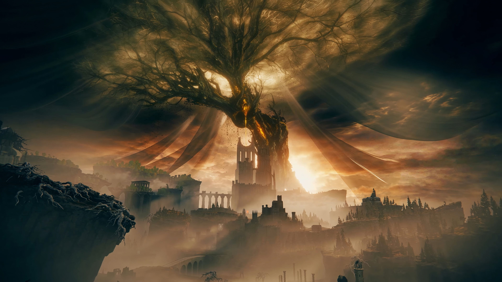

Shadow of the Erdtree
В трещинах света спит корень забвения.
Сколь смел ты, путник, ступить в её тень?
Войди — и узри, кем ты был, и кем станешь.
Предвестие Золота
Утраченные корни древней власти вновь пробуждаются. Прах богов ещё не остыл, но шаги по их руинам уже отзываются в вечности.
